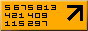
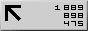
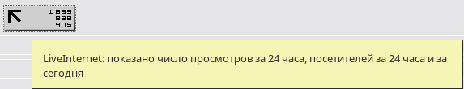

Многие веб-мастера ставят себе на сайт счетчик LiveInternet. У такого счетчика можно выбрать разный дизайн и чаще всего выбирают компактный, состоящий просто из трех чисел. Вот как он может выглядеть:


Что обозначают эти три числа в таком неинтуитивном представлении? На этот счет существует много мифов, и самый популярны из них такой:
На счетчике показывается общее число посетителей сайта за все время с момента установки счетчика, число просмотров за 24 часа, и число посетителей за сегодня (с полуночи по московскому времени).
Этот миф копируется с сайта на сайт, но не соответствует действительности. Если посмотреть на счетчики то можно задаться вопросом: почему за все время существования сайта (верхнее число) на него пришло всего в два-пять раз больше посетителей, чем за 24 часа? Явно получается, что верхнее число обозначает что-то другое.
С некоторых пор счетчик LiveInternet начал содержать в себе всплывающую подсказку, объясняющую что значат эти три числа. Выглядит она так:

Вот это уже похоже на правду. Можно написать более точнее:
Счетчики от других Интернет-сервисов, в основном, показывают такие же числа. Но не факт, что на каких-либо счетчиках отображается то-то другое, и тоже без объяснения что сии цифири значат. С каждым счетчиком надо разбираться отдельно.
|
Знаете ли вы, что: Если вы хотите видеть красивые большие числа посетителей на своих счетчиках, заказывайте создание сайтов у профессионалов. Тем самым вы сэкономите и время, и деньги, и нервы. |